安全性
安全性
Cloud Insights的新增功能
 建议更改
建议更改
NetApp 不断改进和完善其产品和服务。下面是Cloud Insights 商业版中提供的一些最新特性和功能。

|
其中某些功能可能在Cloud Insights 联邦版中不可用、也可能随功能缩减而提供。在可能的情况下、这些差异会在文档中予以说明。 |
2024年3月
工作负载安全代理详细信息
您的每个工作负载安全代理都有自己的登录页，您可以在该页上轻松查看有关代理以及与该代理关联的已安装数据和用户目录收集器的摘要信息。

更快地绘制更多数据图表
在分析资产登录页面上的数据时、只需将其他数据添加到"Expert View"图表即可。对于登录页面上的每个表、如果某个对象类型具有相关数据、请将鼠标悬停在该对象上方以显示"Add to Expert View"图标。选择此图标可将该对象添加到其他资源中、并将其显示在"Expert View"图表中。

或者、您可能希望在登录页面表的图表中查看其数据。只需选择_Show Chart_图标即可打开表下方的图表：

2024年2月
可用性改进
从右下拉列表中选择_Export as Image_、保存当前信息板的*快照*。Cloud Insights会创建当前小工具状态的.PNG。

*对象和度量选择*比以往任何时候都更容易用于小组件、显示器等 选择所需的对象类型、然后在单独的下拉列表中选择与该对象相关的度量指标。

*通过选择这些页面顶部的图标、将数据收集器和采集单元*导出为.CSV。

我们*重新组织了“帮助”>“支持”*页面，以便更容易找到您要查找的内容。由于您要求提供这些内容，我们在此页面上添加了指向*API Swagger *和用户文档的直接链接。

如果此对象有登录页面、则"Alerts"(警报)列表页面上"RTKEERedOn"(触发)列中的*链接*将导航到相应的登录页面。

查看命名空间中的所有更改
现在、您可以在选择集群和命名空间时查看更改时间线。以前、还必须选择工作负载。 按集群和命名空间筛选时、该命名空间中所有工作负载更改的时间线将显示在一行中。

相关警报日志
查看日志警报时、相关日志条目将显示在新表中。 如果日志条目与警报位于相同的来源和时间范围内、并且受相同条件的约束、则日志条目是相关的。选择"Analyze Logs"(分析日志)以进一步了解。

收集ONTAP交换机数据
工作负载安全性Data Collector API
在大型环境中、您可以使用新的数据收集器API自动创建工作负载安全收集器。导航到*Admin > API Access > API Documentation*并选择_Workload Security_ API类型以了解更多信息。
2024年1月
试用您尚未使用的Cloud Insights功能
除了Cloud Insights的初始试用之外、您还可以利用 "单元试用"。例如、如果您订阅了Cloud Insights并一直在监控存储和虚拟机、则在向环境添加Kubennetes时、您将自动开始试用30天的Kubennetes Observability。在试用期结束之前、Kubbernetes可观察性受管单元的使用量不会计入您订阅的授权。
我的工作负载运行状况如何？
工作负载运行状况可在* Kubernetes > Explore > Workloads*页面上一目了然地查看、因此您可以快速查看哪些工作负载运行良好以及哪些工作负载可能需要一些帮助。

Data Collector 更新
数据域标识
数据域收集器已得到改进、可以更好地识别HA系统、以确保故障转移事件的持久性。此更改将发生原因对HA系统中的Data Domain设备进行*一次性*重新标识、之后会对要删除的资产上的任何标注进行发生原因(因为这些阵列将重新标识)。您需要将标注重新附加到Data Domain对象。
增强型反洗钱检测ML算法
工作负载安全性包括新的第二代勒索软件检测ML算法、可更快、更准确地检测最复杂的攻击。
行为的"季节性"：周末行为可能与工作日不同、早晨行为可能与下午不同。工作负载安全算法会将这种季节性因素考虑在内。
2023年12月
变更分析概览
Kubernetes "变更分析" 为您提供一个一体化视图、用于查看Kubbernetes环境的最新更改。警报和部署状态触手可及。借助变更分析、您可以跟踪每个部署和配置变更、并将其与K8s服务、基础架构和集群的运行状况和性能相关联。

Kubbernetes工作负载性能信息板
工作负载性能可通过全面的Kubnetes工作负载性能信息板一目了然。快速查看有关卷、吞吐量、延迟和重新传输趋势的图形、以及环境中每个命名空间的工作负载流量表。筛选器可轻松聚焦到感兴趣的区域。


在一个屏幕上查询详细信息
在查询中、选择一行将打开一个侧面板、其中显示了选定行的属性、标注和指标详细信息、无需深入查看对象的登录页面即可提供有用的信息。行或侧面板中的链接便于导航。

Data Collector更新：
-
Brocade FOS Rest：此收集器已从"预览"中移出、现已公开发布。需要注意的事项：
-
FOS在FOS 8.2中引入了REST API。但是、某些功能(如路由)在9.0中仅获得REST API功能。
-
如果您的网络结构包含更高版本的混合FOS资产8.2以及某些< 8.2的资产、则Cloud Insights FOS REST收集器将无法发现这些旧资产。您可以编辑FOS REST收集器、并为这些设备的IPv4地址构建一个逗号分隔列表、以便从该收集器中排除。
-
-
SELinux：Cloud Insights对Linux采集单元初始安装进行了增强，以确保在启用SELinux强制实施的情况下Linux环境中运行的稳定性。这些增强功能仅会影响_new_ AU部署；如果您有任何与AU升级相关的SELinux问题、请联系NetApp支持部门以修复您的SELinux配置。
2023年11月
工作负载安全性：暂停/恢复收集器
在"工作负载安全性"中、如果数据收集器处于_running"状态、则可以暂停该收集器。打开收集器的"三点"菜单、然后选择暂停。暂停收集器时、不会从ONTAP收集任何数据、也不会从收集器向ONTAP发送任何数据。选择恢复以重新开始收集。
存储节点支持信息
在存储节点登录页面上、_User Data_部分可提供有关您的支持服务、当前状态、支持状态和保修结束日期的概览信息。请注意、Cloud Insights当前仅会自动为NetApp设备发布此信息。另请注意、这些支持字段是标注、因此可以在查询和信息板中使用。

将VMware标记映射到Cloud Insights标注
。 "VMware" 通过数据收集器、您可以使用在VMware上配置的同名标记填充Cloud Insights文本标注。
适用于FOS 9.1.1c及更高版本固件的Brocade CLI收集器可靠性增强功能
在某些运行9.1.1c固件的Brocade光纤通道交换机上、某些命令行界面命令的输出可能会在"moded"登录横幅文本前添加、或者警告用户更改默认密码。Brocade CLI收集器已得到增强、可忽略这两种类型的无关文本。
在此增强功能之前、使用此收集器类型只能发现不存在虚拟结构的FOS 9.1.1c交换机。
2023年10月
增强的工作负载安全性
工作负载安全性已通过以下功能得到改进：
-
访问被拒绝：工作负载安全性与ONTAP集成以接收 ""访问被拒绝"事件" 并提供额外的分析和自动响应层。
-
允许的文件类型：如果检测到已知文件扩展名的勒索软件攻击、则可以将该文件扩展名添加到 "允许的文件类型" 列表以防止不必要的警报。
单元试用
除了Cloud Insights的初始试用之外、您还可以利用 "单元试用"。例如、如果您已订阅基础架构可观察性、但要将Kubennetes添加到您的环境中、则您将自动进入30天的Kubennetes可观察性试用版。只有在试用期结束时、您才会因使用Kubbernetes Observability管理的单元而付费。

Data Collector 更新
已进行以下数据收集器/采集单元更改：
-
Isila/PowerScale Rest：Cloud Insights增强型分析功能添加了各种新属性和指标(以_emc_isilon.node_pool.*_的名称命名)。这些计数器和属性将使用户能够构建信息板并监控_ne_pool_容量消耗情况；使用基于不同硬件节点型号构建的Isilan集群的用户将拥有多个节点池、了解节点池级别的HDD/SSD/总容量消耗情况对于监控和规划都很有用。
-
Rubirk“服务帐户”身份验证支持：Cloud Insights的Rubirk收集器现在既支持传统的HTTP基本身份验证(用户名和密码)，也支持Rubirk的服务帐户方法，这种方法需要用户名+机密+组织ID。
2023年9月
在日志中轻松找到所需内容
日志查询(Observability >日志查询>+New Log Query)包括许多 "增强功能" 以便更轻松地进行日志探索、并提供更多信息。
包括/排除
在筛选某个值时，您可以轻松地选择是*include*还是*exult*与筛选器匹配的结果。选择"ex懦"将创建"NNOT <value>(非DNS)"筛选器。您可以在一个筛选器中组合包含值和排除值。

高级查询
*高级查询*让您有机会创建"自由格式"筛选器，使用AND、NOT、OR、通配符等组合或排除值

"筛选依据"和"高级查询"将一起"和"形成一个查询。结果将显示在结果列表和图表中。
在图表中分组
当您为*分组依据*选择日志属性时，列表和图表将显示当前筛选器的结果。在图表中、按颜色分组的列。将鼠标悬停在图表中的一列上将显示有关特定条目的详细信息、类似于展开图表图例时显示的整体信息。 在图例中、您还可以选择为特定分组设置包含或排除筛选器。

"浮动"日志详细信息面板
使用日志查询浏览日志时、选择列表中的一个条目将打开该条目的详细信息面板。现在、您可以选择显示该分出面板"浮动"(即显示在屏幕的其余部分上)或"页面中"(即显示为页面中的自己的框架)。要在这些视图之间切换、请选择面板右上角的"页面/浮动"按钮。
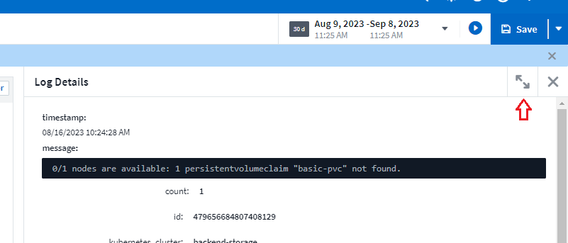
折叠菜单
您可以通过选择菜单下方的"最小化"按钮折叠左侧Cloud Insights导航菜单。最小化菜单时、将鼠标悬停在图标上以查看其打开的部分；选择图标将打开菜单并直接转到该部分。

改进了Data Collector
通过Cloud Insights、可以更轻松地显示和查找数据收集器信息：
-
*数据收集器列表*的处理效率更高，这意味着显示和导航这些列表所需的时间大大减少。如果您的大型环境包含许多数据收集器、则在列出数据收集器时会有显著的改进。
-
数据收集器支持表*已从.PDF文件移至基于.HTML的页面，导航速度更快，维护更方便。在此处查看新矩阵： https://docs.netapp.com/us-en/cloudinsights/reference_data_collector_support_matrix.html
2023年8月
收集Isilon/PowerScale日志和高级分析数据
Isilan REST和PowerScale REST收集器具有以下改进功能：
-
Isilan日志事件可用于查询和警报
-
Isilan Advanced理事会属性可用于查询、信息板和警报：
-
EMC_Isila.cluster
-
emc_isilon.node
-
emc_isilon.node_disk
-
emc_isilon.net_iface
-
默认情况下、Isilar REST和/或PowerScale REST收集器的用户会启用这些功能。NetApp强烈建议使用Isilan基于命令行界面的收集器的用户迁移到新的基于REST API的收集器、以获得上述增强功能。
改进的工作负载图
工作负载映射的可用性更高、噪音更少；如果所有相似的外部服务与相同的工作负载通信、则会将这些服务分组到一个节点中、从而降低图形的复杂性、并更容易了解服务的互连方式。
选择一个分组节点将显示一个详细表、其中包含与该节点相关的每个外部服务的网络流量指标。
Kubnetes托管单元使用调整
如果NetApp Kubennetes监控操作员和底层基础架构数据收集器(例如VMware)都计算了Kubennetes集群环境中的某个计算资源、则系统将调整这些资源的使用情况、以确保最高效地计算受管单元。您可以在"管理">"订阅"页面的"摘要"和"使用量"选项卡中查看Kubenetes MU调整。
摘要选项卡： 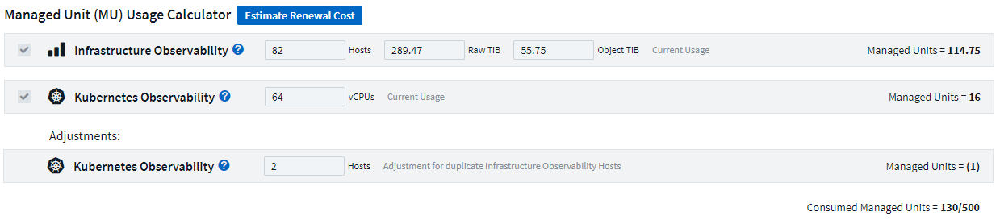
使用情况选项卡：

收集器/采集更改：
已进行以下数据收集器/采集单元更改：
-
采集单元现在支持RHEL 8.7。
改进了菜单
我们更新了左侧导航菜单、以更好地支持客户的工作流。通过_Kubernetes_等新的顶级项目、可以加快访问客户所需内容的速度、而整合的管理员控制台则支持租户所有者角色。
下面是一些其他变更示例：
-
顶层_Observability _菜单显示了数据发现、警报和日志查询
-
可观察性和工作负载安全性的‘API Access’功能位于一个菜单下
-
同样、对于可观察性和工作负载安全性‘通知’功能、现在也在一个菜单下

下面简要列出了您可以在每个菜单下找到的功能：
可观察性：
-
浏览(信息板、指标查询、基础架构洞察)
-
警报(监控和警报)
-
收集器(数据收集器和采集单元)
-
日志查询
-
丰富(标注和标注规则、应用程序、设备解析)
-
报告
Kubernetes：
-
集群探索和网络映射
工作负载安全性：
-
警报
-
取证
-
收集器
-
策略
ONTAP基础知识：
-
数据保护
-
安全性
-
警报
-
基础架构
-
网络
-
工作负载
*VMware
管理员：
-
API 访问
-
审核
-
通知
-
订阅信息
-
用户管理
2023年7月
显示最近的更改
现在、Data Collector登录页面包含一个最近更改的列表。只需单击任何数据收集器登录页面底部的"Recent changes"按钮、即可显示数据收集器的最新更改。
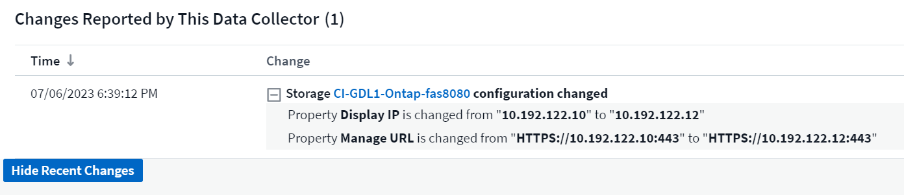
Insight：回收冷存储
。 "回收ONTAP冷存储Insight" 现在支持FlexGroup、现在可供所有客户使用。
操作员图像签名
对于使用私有存储库作为NetApp Kubernetes监控操作员的客户、您现在可以在操作员安装期间复制图像签名公共密钥、从而使您能够确认下载软件的真实性。在可选步骤中选择_复制图像签名公共密钥_按钮以将操作员图像上传至您的私有存储库_。

适用于查询的聚合、"环境格式"等
聚合、单元选择、条件格式和列重命名是信息板表小工具中最有用的功能、现在这些功能可用于 "查询"。
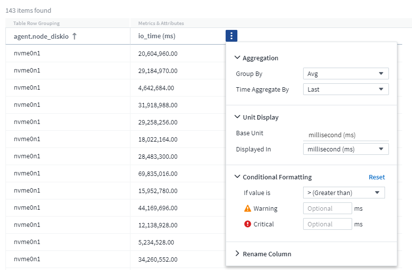
这些功能现在可用于集成类型的数据(Kubnetes、ONTAP高级指标等)、不久将用于基础架构对象(存储、卷、交换机等)。
用于审核的API
现在、您可以使用API查询或导出已审核事件。转到"Admin">"API Access"、然后选择_API Documentation_链接以获取信息。

数据收集器：经济实惠
Cloud Insights现在支持三端经济型驱动程序、实现了以下优势：
-
了解POD到ONTAP qtree的映射和性能指标。
-
提供无缝故障排除、并轻松地从Kubbernetes Pod导航到后端存储
-
使用监控器主动检测后端性能问题
2023年6月
查看您的使用情况
从2023年6月开始、Cloud Insights将根据功能集提供托管单元使用情况细分。现在、您可以快速查看和监控基础架构的受管单元(MU)使用情况以及与Kubnetes关联的MU使用情况。

Kubnetes网络监控和映射适用于所有
。 "Kubbernetes网络性能和映射" 通过映射Kubernetes工作负载之间的依赖关系来简化故障排除、从而实时了解Kubernetes网络性能的等待时间和异常情况、以便在性能问题影响用户之前发现这些问题。许多客户发现它在预览期间很有用、现在每个人都可以使用它。
收集器/采集更改：
已进行以下数据收集器/采集单元更改：
-
数据域和延迟MU的计量值为40 TiB：1 MU。
-
采集单元现在支持RHEL和Rocky 9.0和9.1。
全新的ONTAP基础知识信息板
以下ONTAP基础知识信息板已在预览环境中提供、现在可供所有人使用：
-
安全信息板
-
数据保护信息板(包括本地和远程保护概述)
其他系统监视器
Cloud Insights附带了以下系统监视器：
-
Storage VM FCP服务不可用
-
Storage VM iSCSI服务不可用
2023年5月
改进了Kubnetes Monitoring Operator安装
的安装和配置 "NetApp Kubernetes监控操作员" 通过以下改进、比以往任何时候都更轻松：
-
environment "配置设置" 保存在一个自行记录的配置文件中。
-
有关将Kubnetes Monitoring Operator映像上传到私有存储库的分步说明。
-
只需使用一个命令即可升级Kubnetes监控、同时保留自定义配置、升级起来非常简单。
-
更安全：API密钥可以安全地管理机密。
-
使用CI/CD自动化工具轻松集成和部署。
存储虚拟化
Cloud Insights 可以区分具有本地存储的存储阵列或虚拟化其他存储阵列的存储阵列。这样、您就可以将成本和性能从前端一直与基础架构的后端关联起来。

报告Kubbernetes数据
Cloud Insight收集的Kubernetes数据(包括永久性卷(PV)、PVC、工作负载、集群和命名区)现在可用于报告、支持成本分摊、趋势分析、预测、TTF计算、 和其他业务报告有关Kubbernetes指标的信息。
为新客户启用了默认ONTAP 系统监控器
在新的Cloud Insights 环境中、许多ONTAP 系统监控器默认处于启用状态(即_REORENSE_)。以前、大多数显示器默认为_Paused _状态。由于各公司的业务需求各不相同、因此我们始终建议您查看 "系统监控器" 并根据警报需求暂停或恢复每个。
2023年4月
Kubnetes性能监控和映射
。 "Kubbernetes网络性能和映射" 功能可通过映射Kubernetes工作负载之间的依赖关系来简化故障排除。它可以实时查看Kubbernetes网络性能的等待时间和异常情况、以便在性能问题影响用户之前发现这些问题。此功能可通过分析和审核Kubnetes流量来帮助企业降低整体成本。
主要功能：•工作负载图显示了Kubernetes工作负载的依赖关系和流、并重点显示了网络和性能问题。•监控Kubnetes Pod、工作负载和节点之间的网络流量；确定流量来源和延迟问题。•通过分析传入、传出、跨区域和跨区域网络流量来降低整体成本。
显示"分出"详细信息的工作负载映射：

Kubnetes性能监控和映射以形式提供 "预览" 功能。
ONTAP Essentials安全信息板
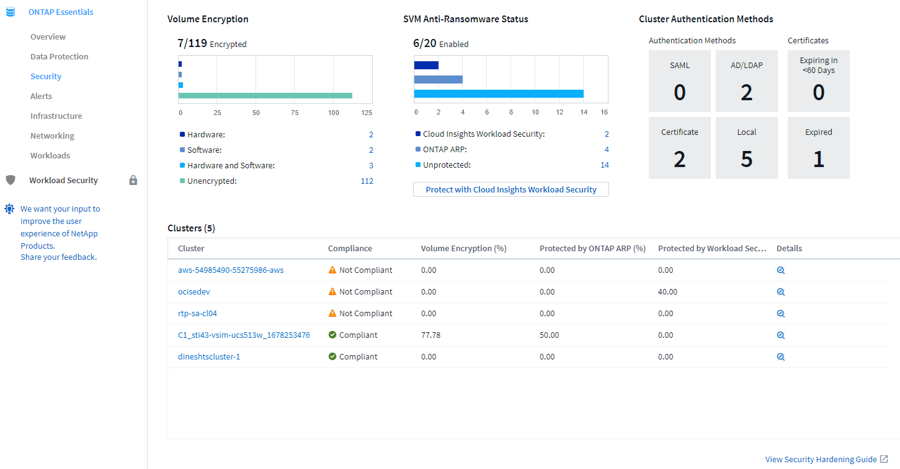
回收ONTAP 冷存储
回收ONTAP 冷存储Insight可提供有关ONTAP 系统上卷的冷容量、潜在成本/电耗节省以及建议操作项的数据。

借助此Insight、您可以问题解答 以下问题：
-
存储集群上有多少冷数据位于(a)高成本SSD磁盘、(b) HDD磁盘和(c)虚拟磁盘上？
-
对于非优化存储、哪些工作负载的贡献最大？
-
给定工作负载上的数据处于冷状态的持续时间(以天为单位)是多少？
回收ONTAP 冷存储_被视为 "Preview" 功能、因此可能会更改。
订阅通知还控制横幅消息
现在、设置订阅通知的收件人("管理">"通知")还可以控制谁将查看与订阅相关的产品横幅通知。


默认暂停显示器
对于新的Cloud Insights 环境、请注意 "系统定义的监控器" 默认情况下不发送警报通知。您需要为要向您发出警报的任何显示器添加一种或多种传送方式、从而为该显示器启用通知。对于现有Cloud Insights 环境、当前处于_Paused"状态的任何系统定义的监控器、已删除默认的_globan_通知收件人列表。用户定义的通知保持不变、当前活动的系统定义监控器的通知设置也保持不变。
正在查找"API正在执行"选项卡？
API系统已从“订阅”页面移至“管理> API访问”页面。
2023年3月
适用于ONTAP 9.9+的云连接已弃用
适用于ONTAP 9.9+的云连接数据收集器已弃用。从2023年4月4日开始、您环境中的Cloud Connection数据收集器将不再收集数据、而是在轮询时显示错误。在后续更新中、Cloud Connection数据收集器将从Cloud Insights 中彻底删除。
在2023年4月4日之前、必须为当前由Cloud Connection收集的任何ONTAP 系统配置一个新的NetApp ONTAP 数据管理软件数据收集器。 "了解更多信息。"。
2023年1月
新的日志监控器
我们增加了近20个 "其他系统监控器" 针对互连链路断开、检测信号问题等发出警报。此外、还添加了三个新的数据保护日志监控器、用于在发生SnapMirror自动重新同步、MetroCluster 镜像和FabricPool 镜像重新同步更改时发出警报。
请注意、其中某些监控器默认为_enabled_；如果您不想对其发出警报、则必须_pause_。另请注意、这些监控器未配置为传送通知；如果要通过电子邮件或网络连接发送警报、您必须在这些监控器上配置通知收件人。
所有信息板表小工具的.CSV导出
确保数据的可访问性至关重要、因此我们已导出.CSV 可用于所有指标查询、信息板表小工具和对象登录页面、而不管您要查询的数据类型(资产或集成)如何。
现在、新的导出功能还包括列选择、重命名列和单元转换等数据自定义功能。
2022年12月
在Cloud Insights 试用期间了解勒索软件保护和其他安全功能
从今天开始、注册新的Cloud Insights 试用版可让您探索各种安全功能、例如勒索软件检测和自动阻止用户响应策略。如果您尚未注册试用版、请立即注册！
Kubernetes工作负载具有自己的登录页面
工作负载是Kubernetes环境的关键组成部分、因此Cloud Insights 现在可为这些工作负载提供登录页面。在此、您可以查看、探索和解决影响Kubernetes工作负载的问题。

检查校验和
您要求我们在安装适用于Windows和Linux的代理时提供校验和值、我们认为这是一个很好的主意。因此、它们是：

日志警报改进
分组依据
现在、在创建或编辑日志监控器时、您可以设置"分组依据"属性、以使警报更有针对性。在您的监控器定义中、查找"filter"设置下的"Group by"属性。

此更改通过规范化监控器定义的"分组依据"方面、将指标监控器和日志监控器置于功能奇偶校验状态。此奇偶校验允许客户克隆/复制*所有*系统定义的默认监控器、以供进一步自定义。
复制
现在、您可以克隆(复制)更改日志、Kubernetes日志和Data Collector日志监控器。这样将创建一个新的自定义日志监控器、您可以根据特定定义进行修改。

11个新的默认ONTAP 监控器、涵盖SnapMirror for Business Continuity
我们增加了近十几个新功能 "系统监控器" 对于SnapMirror for Business Continuity (SMBC)、此功能会在SMBC证书和ONTAP 调解器发生更改时发出警报。
2022年11月
40多个新的安全性、数据收集和CVO监控器！
我们新增了几十个系统定义的新监控器、用于提醒您有关Cloud Volumes、Security和Data Protection的潜在问题。阅读有关这些监控器的更多信息 "此处"。
2022年10月
通过ONTAP 自主勒索软件保护集成、可以更好、更准确地检测勒索软件
Cloud Secure 通过与ONTAP 集成来改进勒索软件检测 "自主勒索软件保护" (ARP)。
Cloud Secure 接收有关潜在卷文件加密活动和的ONTAP ARP事件
-
将卷加密事件与用户活动关联起来、以确定导致损坏的人员、
-
实施自动响应策略以阻止攻击、
-
确定受影响的文件、有助于加快恢复速度并执行数据违规调查。
2022年9月
Basic Edition中提供的监控器
ONTAP "默认监控器" 现在可在Cloud Insights 基本版中使用。其中包括70多个基础架构监控器和30个工作负载示例。
ONTAP 电源和StorageGRID 信息板
信息板库包括一个新的ONTAP 电源和温度信息板以及四个StorageGRID 信息板。如果您的环境正在收集ONTAP 电源指标和/或StorageGRID 数据、请选择*+从图库*导入这些信息板。
表中的阈值可见性概览
通过条件格式、您可以在表小工具中设置和突出显示警告级别和严重级别阈值、从而可以即时查看异常值和异常数据点。

安全监控器
当Cloud Insights 检测到ONTAP 系统上已禁用FIPS模式时、它会向您发出警报。了解更多信息 "系统监控器"、敬请关注此空间、了解更多安全监控器、即将推出！
随时随地聊天
通过选择新的*帮助>实时聊天*链接、在任意Cloud Insights 屏幕上与NetApp支持专家聊天。可从"？"获取帮助 图标。

更明显的洞察力
如果您的环境遇到 "洞察力" 例如_shared resources under stres_or Kubernetes Namesspaces running out of Space、受影响资源的资产登录页面现在包含指向Insight本身的链接、从而加快了探索和故障排除的速度。
新的数据收集器
-
Amazon S3 (在预览版中提供)
-
Brocade FOS 9.0.x
-
Dell/EMC PowerStore 3.0.0.0
其他 Data Collector 更新
现在、所有数据源都经过优化、可在采集单元更新和/或修补之后恢复性能轮询。
2022年8月
Cloud Insights 全新外观！
从本月开始、"监控和优化"已重命名为*可观察性*。您可以在此处找到所有最喜欢的功能、例如信息板、查询、警报和报告。此外、在新的*安全性*菜单下查找Cloud Secure。请注意、只有菜单发生了更改；功能保持不变。

正在查找*帮助*菜单？
帮助现在位于屏幕右上角。

不确定从何处开始？查看ONTAP 基础知识！
"* ONTAP 基础知识*" 是一组信息板和工作流、可提供有关NetApp ONTAP 清单、工作负载和数据保护的详细视图、包括存储容量和性能的天到全满预测。您甚至可以查看是否有任何控制器以高利用率运行。ONTAP 基础知识是您满足所有NetApp ONTAP 监控需求的理想之选！
所有版本均提供ONTAP 基础知识、旨在让现有ONTAP 操作员和管理员直观地使用这些基础知识、从而轻松地从ActiveIQ Unified Manager过渡到基于服务的管理工具。

存储数据系列将合并
您需要它、现在您已准备好了。现在、存储基础2和基础10数据单元可组合成一个系列、从位和字节到tebibits和TB、使您可以更轻松地在信息板上显示您所需的数据。数据速率现在也是他们自己的一个大系列。

我的存储使用了多少电力？
使用NetApp_ontap.storage_shelf、netapp_ontap.system_node和netapp_ontap.cluster (仅限功耗)指标显示和监控ONTAP 存储架和节点的功耗、温度和风扇速度。
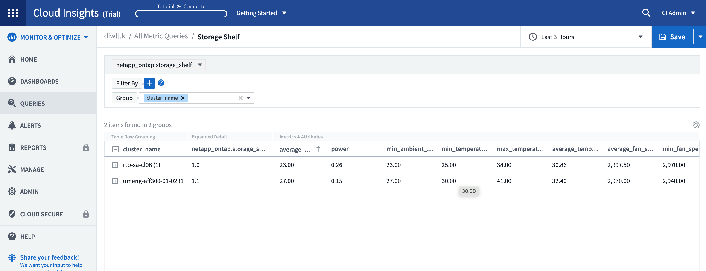
功能已从预览版升级
以下功能已从预览版中移出、现在可供所有客户使用：
* 功能 * |
* 问题描述 * |
Kubernetes命名空间即将用尽 |
通过运行空间不足的_Kubernetes命名空间_ Insight、您可以查看Kubernetes命名空间上可能会用尽空间的工作负载、并估算每个空间达到全满前的剩余天数。"阅读更多内容" |
共享资源面临压力 |
"受压力的共享资源" Insight使用AI/ML自动确定资源争用在环境中导致性能下降的位置、突出显示受其影响的任何工作负载、并提供建议的修复操作、使您能够更快地解决性能问题。"阅读更多内容" |
Cloud Secure —在受到攻击时阻止用户访问 |
可以在检测到攻击时阻止用户访问、从而增强对业务关键型数据的保护。可以使用自动响应策略自动阻止访问、也可以从警报或用户详细信息页面手动阻止访问。"阅读更多内容" |
我的数据收集运行状况如何？
Cloud Insights 为采集单元提供了两个新的检测信号监控器、并提供了两个监控器、用于在数据收集器出现故障时向您发出警报。这些功能可用于快速向您发出数据收集问题的警报。
现在、_Data Collection_监控组中提供了以下监控器：
-
采集单元检测信号严重
-
采集单元检测信号警告
-
收集器失败
-
收集器警告
请注意、默认情况下、这些监控器处于_Paused_state。激活这些用户、使其收到有关数据收集问题的警报。
自动续订API令牌
现在、可以为自动续订设置API访问令牌。启用此功能后、将自动为即将过期的令牌生成新的/刷新的API访问令牌。使用过期令牌的Cloud Insights 代理将自动更新、以使用相应的新API访问令牌/已刷新API访问令牌、从而可以继续无缝运行。创建令牌时、只需选中"自动续订令牌"框即可。目前、在具有最新NetApp Kubernetes监控操作员的Kubernetes平台上运行的Cloud Insights 代理支持此功能。
Basic Edition为您提供了比以往更多的功能
您的试用即将结束、但您还不确定订阅是否适合您？Basic Edition始终为您提供了继续将Cloud Insights 与当前ONTAP 数据收集器结合使用的机会、但现在您也可以继续捕获VMware版本、拓扑和IOPS/吞吐量/延迟数据。在存储系统上获得高级支持的NetApp客户也有权获得Cloud Insights 支持。
是否已准备好了解更多信息？
请查看帮助>支持页面的*学习中心*部分、获取NetApp大学Cloud Insights 课程内容的链接！
2022年6月
Kubernetes集群饱和及其他详细信息
Cloud Insights 通过改进的集群详细信息页面、提供饱和详细信息以及更清晰的命名空间和工作负载视图、让您比以往任何时候都更轻松地探索Kubernetes环境。
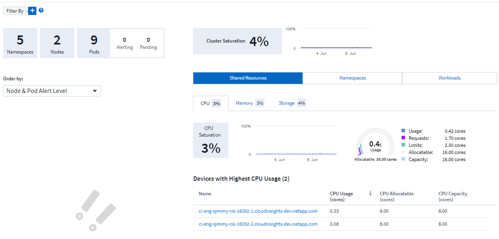
除了节点、Pod、命名空间和工作负载计数之外、您还可以通过集群列表页面快速查看饱和情况：

您的Kubernetes集群有多旧？
您的集群是刚刚起步、还是经历了漫长的数字化生活？已将_age_添加为为Kubernetes节点收集的时间指标。

容量全满时间预测
Cloud Insights 提供了一个信息板、用于预测每个受监控内部卷的容量用尽前的天数。这些值有助于显著降低中断风险。

存储、存储池和卷也可以使用TTF计数器。请始终关注此空间、以获取这些对象的其他信息板。
请注意、"达到全时预测"正在从_Preview_开始、并将推广到所有客户。
我的环境发生了哪些变化？
可以在日志资源管理器中查看ONTAP 更改日志条目。

已更新 Telegraf 代理
用于载入电报集成数据的代理已更新到版本*。1.22.3*、并提高了性能和安全性。要更新的用户可以参阅的相应升级部分 "代理安装" 文档。先前版本的代理将继续运行，无需用户操作。
预览功能
Cloud Insights 会定期重点介绍许多令人兴奋的新预览功能。如果您希望预览其中一个或多个功能，请联系您的 "NetApp 销售团队" 有关详细信息 …
* 功能 * |
* 问题描述 * |
Kubernetes命名空间即将用尽 |
通过运行空间不足的_Kubernetes命名空间_ Insight、您可以查看Kubernetes命名空间上可能会用尽空间的工作负载、并估算每个空间达到全满前的剩余天数。"阅读更多内容" |
Cloud Secure —在受到攻击时阻止用户访问 |
可以在检测到攻击时阻止用户访问、从而增强对业务关键型数据的保护。可以使用自动响应策略自动阻止访问、也可以从警报或用户详细信息页面手动阻止访问。"阅读更多内容" |
共享资源面临压力 |
"受压力的共享资源" Insight使用AI/ML自动确定资源争用在环境中导致性能下降的位置、突出显示受其影响的任何工作负载、并提供建议的修复操作、使您能够更快地解决性能问题。"阅读更多内容" |
2022年5月
与NetApp支持部门实时聊天
现在、您可以与NetApp支持人员实时聊天！在帮助>支持页面上、只需单击聊天图标或单击"联系我们"部分中的_Chat_即可启动聊天会话。标准版和高级版用户可在美国工作日获得聊天支持。
Kubernetes操作员
借助Cloud Insights 的高级Kubernetes监控和集群资源管理器、您可以更轻松地启动和运行。
。 "NetApp Kubernetes监控操作员" (NKMO）是安装适用于Cloud Insights Insights的Kubernetes的首选方法、可通过更少的步骤更灵活地配置监控、并增加监控K8s集群中运行的其他软件的机会。
单击以上链接可了解更多信息和前提条件
使用API管理用户和邀请
现在、您可以使用Cloud Insights 强大的API来管理用户和邀请。在中了解更多信息 "API Swagger文档"。
数据收集警报
请勿因收集器故障而错过关键指标！
使用新的跟踪数据收集器比以往任何时候都更容易 "警报" 数据收集器和采集单元故障。请注意、默认情况下、这些监控器为_Paused_.要启用此功能、请导航到您的监控器页面、找到并恢复"采集单元关闭"和"收集器失败"
ONTAP 存储更改时发出警报
不要让意外的存储更改导致中断！
现在、您可以将Cloud Insights 配置为在ONTAP 系统上检测到修改或删除FlexVol、节点和SVM时发出警报。
预览功能
Cloud Insights 会定期重点介绍许多令人兴奋的新预览功能。如果您希望预览其中一个或多个功能，请联系您的 "NetApp 销售团队" 有关详细信息 …
* 功能 * |
* 问题描述 * |
Kubernetes命名空间即将用尽 |
通过运行空间不足的_Kubernetes命名空间_ Insight、您可以查看Kubernetes命名空间上可能会用尽空间的工作负载、并估算每个空间达到全满前的剩余天数。"阅读更多内容" |
内部卷和卷容量全满时间预测 |
Cloud Insights 可以预测每个受监控内部卷和卷的容量用尽前的天数。此值有助于显著降低中断风险。 |
Cloud Secure —在受到攻击时阻止用户访问 |
可以在检测到攻击时阻止用户访问、从而增强对业务关键型数据的保护。可以使用自动响应策略自动阻止访问、也可以从警报或用户详细信息页面手动阻止访问。"阅读更多内容" |
共享资源面临压力 |
"受压力的共享资源" Insight使用AI/ML自动确定资源争用在环境中导致性能下降的位置、突出显示受其影响的任何工作负载、并提供建议的修复操作、使您能够更快地解决性能问题。"阅读更多内容" |
2022 年 4 月
分享您的反馈！
我们希望您的反馈有助于塑造 Cloud Insights 。参加 NetApp 的 * 行动洞察 * 计划，赢取积分和奖励。 "* 立即注册 *"！
已更新信息板编辑器
我们对信息板创建工具进行了全面革新，使您可以更轻松地快速直观地显示数据。导航到 Cloud Insights 的 " 信息板 " 页面可编辑现有信息板，从我们的信息板库中添加一个信息板或创建您自己的新信息板以进行查看。
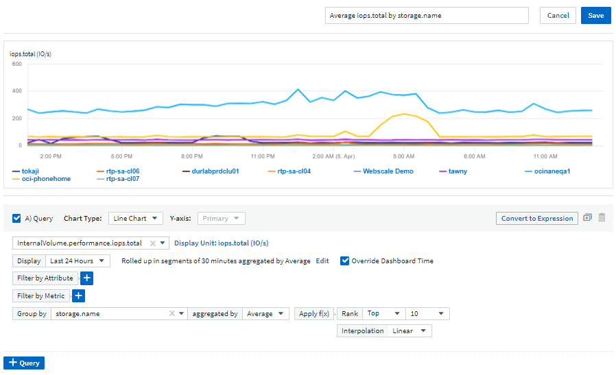
此外，还引入了一种新的计数聚合方法。在将数据分组到条形图，柱形图和饼图小工具中时，您可以快速轻松地显示选定指标的相关对象数量。

此外，现在，您可以从折线图中选择三个 "插值" 方法：
-
无 - 不执行插值
-
线性—在现有点之间插值数据点
-
Stair —使用上一个数据点作为插值数据点
增强了对 Kubernetes 基础架构的监控功能
Cloud Insights 可以在创建或删除 Pod ，子集和副本集以及创建新部署时向您发出警报，让您及时了解 Kubernetes 环境中的变化。Kubernetes 会将默认状态监控为 _paused_state ，因此您应仅启用所需的特定状态。
预览功能
Cloud Insights 会定期重点介绍许多令人兴奋的新预览功能。如果您希望预览其中一个或多个功能，请联系您的 "NetApp 销售团队" 有关详细信息 …
* 功能 * |
* 问题描述 * |
内部卷和卷容量全满时间预测 |
Cloud Insights 可以预测每个受监控内部卷和卷的容量用尽前的天数。此值有助于显著降低中断风险。 |
Cloud Secure —在受到攻击时阻止用户访问 |
可以在检测到攻击时阻止用户访问、从而增强对业务关键型数据的保护。可以使用自动响应策略自动阻止访问、也可以从警报或用户详细信息页面手动阻止访问。"阅读更多内容" |
共享资源面临压力 |
压力洞察力下的共享资源使用 AI/ML 自动确定资源争用在您的环境中导致性能下降的位置，突出显示受其影响的任何工作负载，并提供建议的修复操作，以便您更快地解决性能问题。"阅读更多内容" |
新的 Data Collector
-
* Cohesity SmartFiles*—此基于REST API的收集器将获取Cohesity集群、发现"视图"(作为CI内部卷)、各个节点以及收集性能指标。
其他 Data Collector 更新
以下数据收集器改进了性能数据的收集和显示：
-
Brocade 命令行界面
-
Dell/EMC VPlex ， PowerStore ， Isilon /PowerScale ， VNX Block/Cariion CLI ， XtremIO ， Unity 或 VNXe
-
Pure FlashArray
所有 NetApp 数据收集器以及 VMware 和 Cisco 均已提供这些性能增强功能，并将在未来几个月内推出给所有其他数据收集器。
2022 年 3 月
适用于 ONTAP 9.9+ 的云连接
。 "适用于 ONTAP 9.9+ 的 NetApp 云连接" 数据收集器无需安装外部采集单元，从而简化了故障排除，维护和初始部署。


所有操作系统均可使用新的 Cloud Secure 功能
现在，您的环境比以往任何时候都更加安全， Cloud Secure 提供了以下通用功能：
* 功能 * |
* 问题描述 * |
数据销毁—文件删除攻击检测 |
检测异常的大规模文件删除活动，阻止恶意用户访问恶意文件，并使用自动响应策略自动创建快照。 |
警告和警报的通知各不相同 |
可以将警告和警报通知发送给不同的收件人，以确保合适的团队随时了解最新信息 |
已更新 Telegraf 代理
用于载入电报集成数据的代理已更新为版本 * 。 1.2* ，并提高了性能和安全性。要更新的用户可以参阅的相应升级部分 "代理安装" 文档。先前版本的代理将继续运行，无需用户操作。
Data Collector 更新
-
Broadcom 光纤通道交换机数据收集器已进行优化，可减少每次清单轮询发出的 CLI 命令数量。
2022 年 2 月
Cloud Insights 可解决 Apache Log4j 漏洞
客户安全是 NetApp 的首要任务。Cloud Insights 对其软件库进行了更新，以解决最新的 Apache Log4j 漏洞。
请参见 NetApp 产品安全建议网站上的以下内容：
有关这些漏洞以及 NetApp 响应的详细信息，请参见 "NetApp 新闻中心"。
Kubernetes 命名空间详细信息页面
现在，您可以更好地探索 Kubernetes 环境，并为集群命名空间提供信息丰富的详细信息页面。命名空间详细信息页面提供了命名空间使用的所有资产的摘要，包括所有后端存储资源及其容量利用率。

2021 年 12 月
更深入地集成 ONTAP 系统
通过与 NetApp 事件管理系统（ EMS ）的全新集成，简化 ONTAP 硬件故障警报等操作。"浏览并发出警报" ONTAP 中的低级别 Cloud Insights 消息，用于通知和改进故障排除工作流，并进一步减少对 ONTAP Element 管理工具的依赖。

数据收集器级别的通知。
除了系统定义和自定义创建的警报监控器之外，您还可以为 ONTAP 数据收集器设置警报通知，从而可以为收集器级别的警报指定收件人，而不受其他监控器警报的影响。
提高 Cloud Secure 角色的灵活性
可以根据授予用户访问 Cloud Secure 功能的权限 "角色" 由管理员设置：
角色 |
Cloud Secure 访问 |
管理员 |
可以执行所有 Cloud Secure 功能，包括警报，取证，数据收集器，自动响应策略和 Cloud Secure API 等功能。管理员还可以邀请其他用户，但只能分配 Cloud Secure 角色。 |
用户 |
可以查看和管理警报以及查看取证。用户角色可以更改警报状态、添加注释、手动创建快照以及阻止用户访问。 |
来宾 |
可以查看警报和取证。来宾角色不能更改警报状态、添加备注、手动创建快照或阻止用户访问。 |
操作系统支持
CentOS 8.x 支持将替换为 * CentOS 8 Stream* 支持。CentOS 8.x 将于 2021 年 12 月 31 日到期。
Data Collector 更新
添加了许多 Cloud Insights 数据收集器名称以反映供应商的更改：
供应商 / 型号 |
以前的名称 |
Dell EMC PowerScale |
Isilon |
HPE Alletra 9000/Primera |
3PAR |
HPE Alletra 6000 |
Nimble |
2021年11月
自适应信息板
New variables for attributes and the ability to use variables in widerts 。
信息板现在比以往更强大，更灵活。使用属性变量构建自适应信息板，以便快速地实时筛选信息板。使用这些和其他原有的 "变量" 现在，您可以创建一个高级别信息板来查看整个环境的指标，并按资源名称，类型，位置等进行无缝筛选。在小工具中使用数字变量将原始指标与成本相关联，例如存储即服务的每 GB 成本。
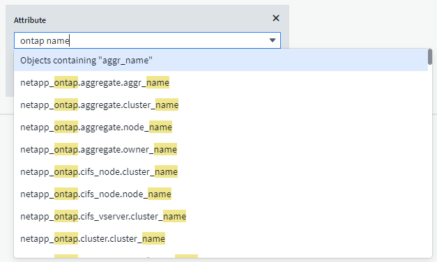
通过 API 访问报告数据库
增强了与第三方报告， ITSM 和自动化工具集成的功能： Cloud Insights 功能强大 "API" 允许用户直接查询 Cloud Insights 报告数据库，而无需通过 Cognos 报告环境。
VM 登录页面上的 POD 表
在 VM 和 Kubernetes Pod 之间使用它们进行无缝导航：为了改进故障排除和性能余量管理， VM 登录页面上将显示一个关联的 Kubernetes Pod 表。

Data Collector 更新
-
现在， ECS 将报告存储和节点的固件
-
Isilon 改进了提示检测功能
-
Azure NetApp Files 可以更快地收集性能数据
-
StorageGRID 现在支持单点登录（ SSO ）
-
Brocade CLI 正确报告 X-4 的型号
支持的其他操作系统
除了已支持的操作系统之外， Cloud Insights 采集单元还支持以下操作系统：
-
CentOS （ 64 位） 8.4
-
Oracle Enterprise Linux （ 64 位） 8.4
-
Red Hat Enterprise Linux （ 64 位） 8.4
2021年10月

用于报告的 K8s 数据
现在， Kubernetes 数据可用于报告，从而可以创建成本分摊或其他报告。要将 Kubernetes 成本分摊数据传递到报告，您必须与 Kubernetes 集群及其后端存储建立活动连接，并且 Cloud Insights 必须从这些集群接收数据。如果未从后端存储收到任何数据，则 Cloud Insights 无法将 Kubernetes 对象数据发送到报告。

暗主题已出现
你们中的许多人都要求使用非公开主题， Cloud Insights 也回答了这个问题。要在浅色和暗色主题之间切换，请单击用户名旁边的下拉列表。

Data Collector 支持
我们对 Cloud Insights 数据收集器进行了一些改进。下面是一些亮点：
-
适用于 ONTAP 的 Amazon FSX 的新收集器
2021年9月
现在，性能策略会进行监控
监控和警报已在整个 Cloud Insights 中取代性能策略和违规。 "向监控器发出警报" 提高灵活性，深入了解环境中的潜在问题或趋势。
监控器中的 AutoComplete 建议，通配符和表达式
创建用于警报的监控器时，键入筛选器现在可以预测性，便于您轻松搜索和查找监控器的指标或属性。此外，您还可以选择根据键入的文本创建通配符筛选器。

已更新 Telegraf 代理
用于载入电报集成数据的代理已更新到版本 * 。 1.19.3* ，并提高了性能和安全性。要更新的用户可以参阅的相应升级部分 "代理安装" 文档。先前版本的代理将继续运行，无需用户操作。
Data Collector 支持
我们对 Cloud Insights 数据收集器进行了一些改进。下面是一些亮点：
-
Microsoft Hyper-V 收集器现在使用 PowerShell ，而不是 WMI
-
由于并行调用， Azure VM 和 VHD 收集器的速度现在高达 10 倍
-
HPE Nimble 现在支持联合配置和 iSCSI 配置
由于我们始终在改进数据收集，因此以下是最近的一些其他更改：
-
适用于 EMC Powerstore 的新收集器
-
Hitachi Ops Center 的新收集器
-
Hitachi 内容平台的新收集器
-
增强了 ONTAP 收集器以报告网络结构池
-
通过存储池和卷性能增强了 ANF
-
具有存储节点和存储性能以及存储分段中的对象计数的增强型 EMC ECS
-
具有存储节点和 qtree 指标的增强型 EMC Isilon
-
具有卷 QoS 限制指标的增强型 EMC Symmetrix
-
具有存储节点父序列号的增强型 IBM SVC 和 EMC PowerStore
2021年8月
2021 年 6 月
筛选器中的 AutoComplete 建议，通配符和表达式
在此版本的 Cloud Insights 中，您不再需要了解查询或小工具中要筛选的所有可能名称和值。筛选时，您只需开始键入即可， Cloud Insights 将根据您的文本建议值。不再需要提前查找应用程序名称或 Kubernetes 属性，只需查找要显示在小工具中的应用程序名称或属性即可。
键入筛选器时，该筛选器会显示一个智能结果列表，您可以从中选择，并可选择根据当前文本创建 * 通配符筛选器 * 。选择此选项将返回与通配符表达式匹配的所有结果。当然，您也可以选择要添加到筛选器中的多个单独值。

此外，您可以使用 NOT 或 OR 在筛选器中创建 * 表达式 * ，也可以选择 " 无 " 选项来筛选字段中的空值。
了解更多信息 "筛选选项" 在查询和小工具中。
API 由版本提供
Cloud Insights 功能强大的 API 比以往任何时候都更易于访问，而警报 API 现在可在标准版和高级版中使用。每个版本均可使用以下 API ：
| API 类别 | 基本 | 标准 | 高级版 |
|---|---|---|---|
采集单元 |
|
|
|
数据收集 |
|
|
|
警报 |
|
|
|
资产 |
|
|
|
数据载入 |
|
|

Kubernetes PV 和 Pod 可见性
通过 Cloud Insights ，您可以查看 Kubernetes 环境的后端存储，从而深入了解 Kubernetes Pod 和永久性卷（ Persistent Volume ， PV ）。现在，您可以通过 PV 计数器到 PV 并一直跟踪从单个 Pod 使用情况到后端存储设备的 PV 计数器，例如 IOPS ，延迟和吞吐量。
在卷或内部卷登录页面上，将显示两个新表：
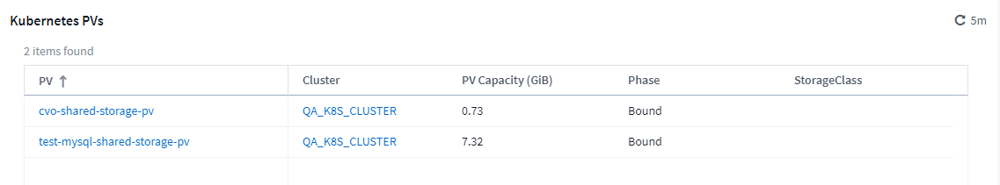

请注意，要利用这些新表，建议卸载当前 Kubernetes 代理并全新安装。您还必须安装 Kube-State-Metrics 2.1.0 或更高版本。
Kubernetes 节点到 VM 链路
现在，您可以在 Kubernetes Node 页面上单击以打开此节点的 VM 页面。VM 页面还包含一个指向节点本身的链接。


警报可监控性能策略的替换情况
为了实现多个阈值，网络连接和电子邮件警报交付以及使用单个界面对所有指标发出警报等额外优势， Cloud Insights 将在 2021 年 7 月和 8 月期间将标准版和高级版客户从 * 性能策略 * 转换为 * 监控 * 。了解更多信息 "警报和监控"，并时刻关注这一激动人心的变化。
Cloud Secure 支持 NFS
现在， Cloud Secure 支持 NFS 进行 ONTAP 数据收集。监控 SMB 和 NFS 用户访问，保护您的数据免受勒索软件攻击。此外， Cloud Secure 还支持使用 Active-Directory 和 LDAP 用户目录来收集 NFS 用户属性。
Cloud Secure 快照清除
Cloud Secure 会根据 Snapshot 清除设置自动删除快照，以节省存储空间并减少手动删除快照的需求。
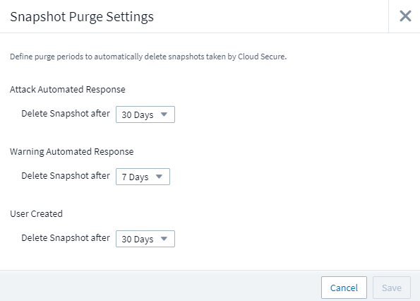
Cloud Secure 数据收集速度
现在，一个数据收集器代理系统每秒最多可以向 Cloud Secure 发布 20 ， 000 个事件。
2021 年 5 月
以下是我们在 4 月份所做的一些更改：
已更新 Telegraf 代理
用于载入电报集成数据的代理已更新为 1.17.3 版，并提高了性能和安全性。要更新的用户可以参阅的相应升级部分 "代理安装" 文档。先前版本的代理将继续运行，无需用户操作。
向警报添加更正操作
现在，在创建或修改监控器时，您可以填写 * 添加警报问题描述 * 部分来添加可选的问题描述以及其他见解和 / 或更正操作。问题描述将随警报一起发送。"insights and corrective Actions " 字段可提供处理警报的详细步骤和指导，并将显示在警报登录页面的摘要部分中。

适用于所有版本的 Cloud Insights API
API 访问现在可在所有版本的 Cloud Insights 中使用。现在， Basic 版本的用户可以自动执行采集单元和数据收集器的操作，而 Standard Edition 用户可以查询指标并载入自定义指标。高级版仍允许充分利用所有 API 类别。
| API 类别 | 基本 | 标准 | 高级版 |
|---|---|---|---|
采集单元 |
|
|
|
数据收集 |
|
|
|
资产 |
|
|
|
数据载入 |
|
|
|
数据仓库 |
|
有关 API 使用情况的详细信息，请参见 "API 文档"。
2021年4月
更轻松地管理监控器
"监控分组" 简化环境中监控器的管理。现在，可以将多个监控器分组在一起并将其作为一个暂停。例如，如果基础架构堆栈发生更新，则只需单击一下，即可暂停所有这些设备发出的警报。
监控组是一项令人兴奋的新功能的第一部分，该功能可为 Cloud Insights 改进 ONTAP 设备的管理。

使用 Webhooks 增强了警报选项
许多商业应用程序都支持 "网络挂钩" 作为标准输入接口。Cloud Insights 现在支持许多此类交付渠道，除了提供可自定义的通用 webhooks 来支持许多其他应用程序之外，还为 Slack ， PagerDty ， Teams 和 Chdiscs 提供了默认模板。

改进了设备标识
为了改进监控和故障排除以及提供准确的报告，了解设备名称而不是其 IP 地址或其他标识符会很有帮助。现在， Cloud Insights 采用了一种基于规则的方法，通过这种方法可以自动识别环境中存储设备和物理主机设备的名称 "* 设备解析 *"，可从 * 管理 * 菜单中获取。
您需要更多！
客户最常提出的一个问题是，提供更多默认选项来直观显示数据范围，因此我们增加了以下五个新选项，这些选项现在可通过时间范围选取器在整个服务中使用：
-
过去 30 分钟
-
过去 2 小时
-
过去 6 小时
-
过去 12 小时
-
过去 2 天
一个 Cloud Insights 环境中有多个订阅
从 4 月 2 日开始， Cloud Insights 支持在一个 Cloud Insights 实例中为客户订阅多个相同版本类型的订阅。这样，客户就可以将其 Cloud Insights 订阅的部分期限与基础架构采购同时进行。请联系 NetApp 销售部门，以获得有关多个订阅的帮助。
选择您的路径
在设置 Cloud Insights 时，您现在可以选择是从监控和警报开始，还是从勒索软件和内部威胁检测开始。Cloud Insights 将根据您选择的路径配置您的启动环境。之后，您可以随时配置另一路径。
更轻松地加入 Cloud Secure
而且，使用新的分步设置检查清单，开始使用 Cloud Secure 比以往任何时候都更容易。

我们一如既往地乐意倾听您的建议！请将其发送至 ng-cloudinsights-customerfeedback@netapp.com 。
2021年2月
已更新 Telegraf 代理
用于载入电报集成数据的代理已更新为 1.17.0 版，其中包括漏洞和错误修复。
云成本分析器
利用云成本体验 NetApp Spot 的强大功能，提供详细的信息 "成本分析" 了解过去，现在和估计支出，了解您环境中的云使用情况。云成本信息板可清晰地显示云支出，并深入了解各个工作负载，帐户和服务。
云成本有助于应对以下主要挑战：
-
跟踪和监控云支出
-
确定浪费和潜在优化领域
-
交付可执行的操作项
云成本主要用于监控。升级到 NetApp 帐户的全包，实现自动成本节省和环境优化。
使用筛选器查询具有空值的对象
现在， Cloud Insights 允许使用筛选器搜索值为空或无的属性和指标。您可以在以下位置对任何属性 / 指标执行此筛选：
-
在 "Query" 页面上
-
在信息板小工具和页面变量中
-
在警报列表页面上
-
创建监控器时
要筛选空值或无值，只需在相应的筛选器下拉列表中显示时选择 None 选项即可。

Multi-Region 支持
从今天开始，我们在全球不同地区提供 Cloud Insights 服务，这有助于提高美国以外客户的性能并提高安全性。Cloud Insights 或 Cloud Secure 会根据创建环境的区域存储信息。
单击 "此处" 有关详细信息 …
2021年1月
已重命名其他 ONTAP 指标
为了不断提高从 ONTAP 系统收集数据的效率，我们对以下 ONTAP 指标进行了重命名。
如果您已有使用上述任一指标的信息板小工具或查询，则需要编辑或重新创建这些小工具或查询，才能使用新指标名称。
| 先前指标名称 | 新指标名称 |
|---|---|
netapp_ontap.disk_constituent.total_transfers |
netapp_ontap.disk_constituent.total_IOPS |
netapp_ontap.disk.total_transfers |
netapp_ontap.disk.total_IOPS |
netapp_ontap.fcp_lif.read_data |
netapp_ontap.fcp_lif.read_throughput |
netapp_ontap.fcp_lif.write_data |
netapp_ontap.fcp_lif.write_throughput |
netapp_ontap.iscsi_lif.read_data |
netapp_ontap.iscsi_lif.read_throughput |
netapp_ontap.iscsi_lif.write_data |
netapp_ontap.iscsi_lif.write_throughput |
netapp_ontap.lif.recv_data |
netapp_ontap.lif.recv_throughput |
netapp_ontap.lif.sent_data |
netapp_ontap.lif.sent_throughput |
netapp_ontap.lun.read_data |
netapp_ontap.lun.read_throughput |
netapp_ontap.lun.write_data |
netapp_ontap.lun.write_throughput |
netapp_ontap.nic_common-rx_bytes |
netapp_ontap.nic_common-rx_throughput |
netapp_ontap.nic_common-tx_bytes |
netapp_ontap.nic_common-tx_throughput |
netapp_ontap.path.read_data |
netapp_ontap.path.read_throughput |
netapp_ontap.path.write_data |
netapp_ontap.path.write_throughput |
netapp_ontap.path.total_data |
netapp_ontap.path.total_throughput |
netapp_ontap.policy_group.read_data |
netapp_ontap.policy_group.read_throughput |
netapp_ontap.policy_group.write_data |
netapp_ontap.policy_group.write_throughput |
netapp_ontap.policy_group.other_data |
netapp_ontap.policy_group.other_throughput |
netapp_ontap.policy_group.total_data |
netapp_ontap.policy_group.total_throughput |
netapp_ontap.system_node.disk_data_read |
netapp_ontap.system_node.disk_throughput 读取 |
netapp_ontap.system_node.disk_data_writed |
netapp_ontap.system_node.disk_throughput 写入 |
netapp_ontap.system_node.hdd_data_read |
netapp_ontap.system_node.hdd_throughput 读取 |
netapp_ontap.system_node.hdd_data_writed |
netapp_ontap.system_node.hdd_throughput 写入 |
netapp_ontap.system_node.sd_data_read |
netapp_ontap.system_node.sd_throughput 读取 |
netapp_ontap.system_node.sd_data_writed |
netapp_ontap.system_node.sd_throughput 写入 |
netapp_ontap.system_node.net_data_recv |
netapp_ontap.system_node.net_throughput_recv |
netapp_ontap.system_node.net_data_sent |
netapp_ontap.system_node.net_throughput_sent |
netapp_ontap.system_node.fcp_data_recv |
netapp_ontap.system_node.fcp_throughput _recv |
netapp_ontap.system_node.fcp_data_sent |
netapp_ontap.system_node.fcp_throughput 发送 |
netapp_ontap.volume_node.cifs_read_data |
netapp_ontap.volume_node.cifs_read_throughput |
netapp_ontap.volume_node.cifs_write_data |
netapp_ontap.volume_node.cifs_write_throughput |
netapp_ontap.volume_node.nfs_read_data |
netapp_ontap.volume_node.nfs_read_throughput |
netapp_ontap.volume_node.nfs_write_data |
netapp_ontap.volume_node.nfs_write_throughput |
netapp_ontap.volume_node.iscsi_read_data |
netapp_ontap.volume_node.iscsi_read_throughput |
netapp_ontap.volume_node.iscsi_write_data |
netapp_ontap.volume_node.iscsi_write_throughput |
netapp_ontap.volume_node.fcp_read_data |
netapp_ontap.volume_node.fcp_read_throughput |
netapp_ontap.volume_node.fcp_write_data |
netapp_ontap.volume_node.fcp_write_throughput |
netapp_ontap.volume.read_data |
netapp_ontap.volume.read_throughput |
netapp_ontap.volume.write_data |
netapp_ontap.volume.write_throughput |
netapp_ontap.workload.read_data |
netapp_ontap.workload.read_throughput |
netapp_ontap.workload.write_data |
netapp_ontap.workload.write_throughput |
netapp_ontap.workload_volume.read_data |
netapp_ontap.workload_volume.read_throughput |
netapp_ontap.workload_volume.write_data |
netapp_ontap.workload_volume.write_throughput |
全新 Kubernetes 资源管理器
。 "Kubernetes 资源管理器" 提供一个简单的 Kubernetes 集群拓扑视图，即使是非专家也可以快速确定问题和依赖关系，从集群级别到容器和存储。
您可以使用 Kubernetes Explorer 的详细信息来了解 Kubernetes 环境中集群，节点， Pod ，容器和存储的状态，使用情况和运行状况，了解各种信息。

2020年12月
更简单的 Kubernetes 安装
Kubernetes Agent 安装经过简化，只需较少的用户交互即可完成。 "安装 Kubernetes Agent" 现在包括 Kubernetes 数据收集。
2020年11月
其他信息板
已向库中添加以下以 ONTAP 为中心的新信息板，可供导入：
-
ONTAP ：聚合性能和容量
-
ONTAP FAS/AFF —容量利用率
-
ONTAP FAS/AFF —集群容量
-
ONTAP FAS/AFF —效率
-
ONTAP FAS/AFF — FlexVol 性能
-
ONTAP FAS/AFF —节点运行 / 最佳点
-
ONTAP FAS/AFF —预发布容量效率
-
ONTAP ：网络端口活动
-
ONTAP ：节点协议性能
-
ONTAP ：节点工作负载性能（前端）
-
ONTAP ：处理器
-
ONTAP ： SVM 工作负载性能（前端）
-
ONTAP ：卷工作负载性能（前端）
表小工具中的列重命名
您可以通过在编辑模式下打开小工具并单击列顶部的菜单来重命名表小工具的 Metrics and Attributes_部分 中的列。输入新名称并单击 _Save ，或者单击 Reset 将列设置回原始名称。
请注意，这仅影响表小工具中列的显示名称；底层数据本身的指标 / 属性名称不会更改。

2020年10月
集成数据的默认扩展
现在，表小工具分组允许默认扩展 Kubernetes ， ONTAP 高级数据和代理节点指标。例如，如果将 Kubernetes Nodes 分组为 Cluster ，则表中将显示每个集群的一行。然后，您可以展开每个集群行以查看 Node 对象的列表。
Basic Edition 技术支持
除了标准版和高级版之外， Cloud Insights 基本版的用户现在还可以获得技术支持。此外， Cloud Insights 还简化了创建 NetApp 支持服务单的工作流。
Cloud Secure 公有 API
Cloud Secure 支持 "REST API" 用于访问活动和警报信息。这是通过使用 API 访问令牌来实现的，该令牌通过 Cloud Secure 管理 UI 创建，然后用于访问 REST API 。这些 REST API 的 Swagger 文档已与 Cloud Secure 集成在一起。
2020 年 9 月
包含集成数据的查询页面
Cloud Insights 查询页面支持集成数据（例如，来自 Kubernetes ， ONTAP 高级指标等）。使用集成数据时，查询结果表将显示一个 " 拆分屏幕 " 视图，对象 / 分组位于左侧，对象数据（属性 / 指标）位于右侧。您还可以选择多个属性对集成数据进行分组。

表小工具中的单位显示格式
现在，可在表小工具中为显示度量指标 / 计数器数据（例如 GB ， MB/ 秒等）的列提供单位显示格式。要更改指标的显示单位，请单击列标题中的 " 三个点 " 菜单，然后选择 " 单元显示 " 。您可以从任何可用单元中进行选择。可用单位因显示列中的度量数据类型而异。

采集单元详细信息页面
采集单元现在具有自己的登录页面，可为每个 AU 提供有用的详细信息以及有助于进行故障排除的信息。。 "AU 详细信息页面" 提供指向 AU 数据收集器的链接以及有用的状态信息。
已删除 Cloud Secure Docker 依赖关系
Cloud Secure 不再依赖 Docker 。安装 Cloud Secure 代理不再需要 Docker 。
报告用户角色
如果您拥有具有报告功能的 Cloud Insights 高级版，则环境中的每个 Cloud Insights 用户还可以通过单点登录（ Single Sign-On ， SSO ）登录到报告应用程序（即 Cognos ）；单击菜单中的 * 报告 * 链接，它们将自动登录到报告。
其在 Cloud Insights 中的用户角色决定了其 "报告用户角色"：
Cloud Insights 角色 |
报告角色 |
报告权限 |
来宾 |
使用者 |
可以查看，计划和运行报告并设置个人首选项，例如语言和时区的首选项。使用者不能创建报告或执行管理任务。 |
用户 |
作者 |
可以执行所有使用者功能以及创建和管理报告和信息板。 |
管理员 |
管理员 |
可以执行所有作者功能以及所有管理任务，例如配置报告以及关闭和重新启动报告任务。 |
|
|
Cloud Insights 报告适用于 500 个或更多 MTU 的环境。 |

|
如果您是最新的 Premium Edition 客户，并且希望保留您的报告，请阅读此内容 "现有客户的重要注意事项"。 |
用于数据载入的新 API 类别
Cloud Insights 增加了一个 * 数据载入 * API 类别，可让您更好地控制自定义数据和代理。有关此 API 类别和其他 API 类别的详细文档，请导航到 * 管理员 > API 访问 * 并单击 _API 文档 _ 链接，在 Cloud Insights 中找到。您还可以在注释字段中为 AU 附加注释，该注释显示在 AU 详细信息页面以及 AU 列表页面上。
2020 年 8 月

2020 年 7 月
Cloud Secure 执行Snapshot_操作
Cloud Secure 可在检测到恶意活动时自动创建快照以保护您的数据，并确保安全地备份您的数据。
您可以定义自动响应策略，以便在检测到勒索软件攻击或其他异常用户活动时创建快照。您也可以从警报页面手动创建快照。
自动创建快照：
手动快照：
指标 / 计数器更新
以下容量计数器可在 Cloud Insights UI 和 REST API 中使用。以前，这些计数器仅可用于数据仓库 / 报告。
| 对象类型 | 计数器 |
|---|---|
存储 |
容量—备用原始容量—原始故障 |
存储池 |
数据容量 - 已用数据容量 - 其他总容量 - 已用其他容量 - 总容量 - 原始容量 - 软限制 |
内部卷 |
数据容量 - 已用数据容量 - 其他总容量 - 已用其他容量 - 克隆节省的总容量 - 总计 |
Cloud Secure 潜在攻击检测
Cloud Secure 现在可以检测到勒索软件等潜在攻击。单击警报列表页面中的警报以打开一个详细信息页面，其中显示以下内容：
-
攻击时间
-
关联的用户和文件活动
-
已采取操作
-
追加信息可帮助跟踪可能的安全违规
显示潜在勒索软件攻击的警报页面：
潜在勒索软件攻击的详细信息页面：
通过 AWS 订阅高级版
在试用 Cloud Insights 期间，您可以 "自行订阅" 通过 AWS Marketplace 升级到 Cloud Insights 标准版或高级版。以前，您只能通过 AWS Marketplace 自行订阅到标准版。
增强型表小工具
信息板 / 资产页面表小工具包括以下增强功能：
-
" 拆分屏幕 " 视图：表小工具在左侧显示对象 / 分组，在右侧显示对象数据（属性 / 指标）。

-
多属性分组：对于集成数据（ Kubernetes ， ONTAP 高级指标， Docker 等），您可以选择多个属性进行分组。数据将根据您选择的分组属性显示。
使用集成数据分组（显示在编辑模式中）：

-
基础架构数据（存储， EC2 ， VM ，端口等）的分组采用一个属性，就像以往一样。如果按非对象属性进行分组，则可以通过此表展开组行以查看组中的所有对象。
使用基础架构数据分组（显示模式中显示）：

指标筛选
除了在小工具中筛选对象属性之外，您现在还可以筛选指标。

使用集成数据（ Kubernetes ， ONTAP 高级数据等）时，指标筛选会从绘制的数据系列中删除单个 / 不匹配的数据点，而不像基础架构数据（存储， VM ，端口等）那样，基础架构数据（存储， VM ，端口等）中的筛选器会处理数据系列的聚合值，并可能从图表中删除整个对象。

ONTAP 高级计数器数据
Cloud Insights 利用 NetApp 的 ONTAP 专用 * 高级计数器数据 * ，该数据提供了从 ONTAP 设备收集的大量计数器和指标。所有 NetApp ONTAP 客户均可使用 ONTAP 高级计数器数据。通过这些指标，可以在 Cloud Insights 小工具和信息板中进行自定义和广泛的可视化。
可以通过在小工具的查询中搜索 "NetApp_ONTAP" 并从计数器中进行选择来找到 ONTAP 高级计数器。

您可以通过键入计数器名称的其他部分来细化搜索。例如：
-
lif
-
聚合 _
-
offbox_vscann_server
-
等等


请注意以下几点：
-
默认情况下，新的 ONTAP 数据收集器将启用高级数据收集。要为现有 ONTAP 数据收集器启用高级数据收集，请编辑此数据收集器并展开 Advanced Configuration 部分。
-
7- 模式 ONTAP 不支持高级数据收集。
高级计数器信息板
Cloud Insights 提供了各种预先设计的信息板，可帮助您开始为 aggregate Performance ， Volume workload ， _Processor Activity" 等主题可视化 ONTAP 高级计数器。如果至少配置了一个 ONTAP 数据收集器，则可以从任何信息板列表页面上的信息板库导入这些数据收集器。
了解更多信息。
有关 ONTAP 高级数据的详细信息，请访问以下链接：
-
https://mysupport.netapp.com/site/tools/tool-eula/netapp-harvest （注意：您需要登录到 NetApp 支持部门）
策略和违规菜单
现在，性能策略和违规可在 * 警报 * 菜单下找到。策略和违规功能保持不变。

已更新 Telegraf 代理
用于载入电报集成数据的代理已更新为 "版本 1.14"，其中包括错误修复，安全修复和新插件。
注意：在 Kubernetes 平台上配置 Kubernetes 数据收集器时，由于 "clusterrole" 属性权限不足，日志中可能会显示 "HTTP status 403 For禁用 " 错误。
要解决此问题描述，请在 Endpoint-access clusterrole 的 _rules ： _ 部分添加以下突出显示的行，然后重新启动 Telegraf Pod 。
rules: - apiGroups: - "" - apps - autoscaling - batch - extensions - policy - rbac.authorization.k8s.io attributeRestrictions: null resources: - nodes/metrics - nodes/proxy <== Add this line - nodes/stats - pods <== Add this line verbs: - get - list <== Add this line
2020 年 6 月
简化了 Data Collector 错误报告
使用数据收集器页面上的 Send Error Report 按钮可以更轻松地报告数据收集器错误。单击此按钮可将有关此错误的基本信息发送给 NetApp ，并提示您对此问题进行调查。按下后， Cloud Insights 将确认已通知 NetApp ，并禁用错误报告按钮以指示已发送该数据收集器的错误报告。此按钮将一直处于禁用状态，直到刷新浏览器页面为止。

小工具改进
信息板小工具进行了以下改进。这些改进被视为预览功能，可能并不适用于所有 Cloud Insights 环境。
-
新的对象 / 指标选择器：对象（存储，磁盘，端口，节点等）及其关联指标（ IOPS ，延迟， CPU 计数等）现在可通过一个包含功能强大的下拉列表的小工具中获得。您可以在下拉列表中输入多个部分术语， Cloud Insights 将列出符合这些术语的所有对象指标。

-
多个标记分组：使用集成数据（ Kubernetes 等）时，您可以按多个标记 / 属性对数据进行分组。例如，按 Kubernetes 命名空间和容器名称对内存使用量求和。

2020 年 5 月
报告用户角色
已为报告添加以下角色：
-
Cloud Insights 使用者：可以运行和查看报告
-
Cloud Insights 作者：可以执行使用者功能以及创建和管理报告和信息板
-
Cloud Insights 管理员：可以执行作者功能以及所有管理任务
Cloud Secure 更新
Cloud Insights 包括以下最新的 Cloud Secure 更改。
在 " 取证 ">" 活动取证 " 页面中，我们提供了两个视图来分析和调查用户活动：
-
活动视图，侧重于用户活动（什么操作？执行位置？）
-
Entities 视图，侧重于用户访问的文件。

此外，警报电子邮件通知现在还包含指向警报页面的直接链接。
信息板分组
信息板分组可以更好地实现 "管理信息板" 与您相关的信息。您可以将相关信息板添加到组中，以便对存储或虚拟机等进行 " 一站式 " 管理。
组按用户自定义，因此一个人的组可以与其他人的组不同。您可以根据需要拥有任意数量的组，每个组中的信息板数量也可以任意数量。

信息板分页
您可以固定信息板，使收藏夹始终显示在列表顶部。

TV 模式和自动刷新
"TV 模式和自动刷新" 允许在信息板或资产页面上近乎实时地显示数据：
-
* 电视模式 * 提供了一个简洁的显示；导航菜单处于隐藏状态，可为数据显示提供更多屏幕空间。
-
信息板和资产登录页面上的小工具中的数据 * 自动刷新 * 根据所选信息板时间范围（或小工具时间范围，如果设置为覆盖信息板时间）确定的刷新间隔（即每 10 秒一次）。
结合使用 " 电视模式 " 和 " 自动刷新 " ，可以实时查看 Cloud Insights 数据，非常适合无缝演示或内部监控。
2020年4月
新的信息板时间范围选项
现在，信息板和其他 Cloud Insights 页面的时间范围选项包括 last 1 hour 和 last 15 minute 。
Cloud Secure 更新
Cloud Insights 包括以下最新的 Cloud Secure 更改。
-
更好地识别文件和文件夹元数据更改，以检测用户是否更改了权限，所有者或组所有权。
-
将用户活动报告导出到 CSV 。
Cloud Secure 监控和审核文件和文件夹上的所有用户访问操作。通过活动审核，您可以遵守内部安全策略，满足 PCI ， GDPR 和 HIPAA 等外部合规性要求，并执行数据违规和安全意外事件调查。
默认信息板时间
信息板的默认时间范围现在为 3 小时，而不是 24 小时。
优化的聚合时间
已优化 "时间聚合" 在 3 小时和 24 小时信息板 / 小工具时间范围内，时间序列小工具（折线图，样条图，面积图和堆积面积图）的间隔更频繁，从而可以更快地绘制数据图表。
-
3 小时时间范围可优化为 1 分钟的聚合间隔。以前这是 5 分钟。
-
24 小时时间范围可优化为 30 分钟的聚合间隔。以前这是 1 小时。
您仍然可以通过设置自定义间隔来覆盖优化的聚合。
显示单元自动格式化
在大多数小工具中， Cloud Insights 知道要显示值的基本单位，例如 migums ， migents ， _percentage _ ， _mms （ ms ） _ ， 等，现在 "自动格式化" 可读性最高的单元的小工具。例如， 1 ， 234 ， 567 ， 890 字节的数据值将自动格式化为 1.23 吉字节。在许多情况下， Cloud Insights 知道所采集数据的最佳格式。如果不知道最佳格式，或者在要覆盖自动格式的小工具中，您可以选择所需的格式。

使用 API 导入标注
借助 Cloud Insights 高级版功能强大的 API ，您现在就可以了 "导入标注" 并将其分配给使用 .CSV 文件的对象。您还可以以相同的方式导入应用程序并分配业务实体。
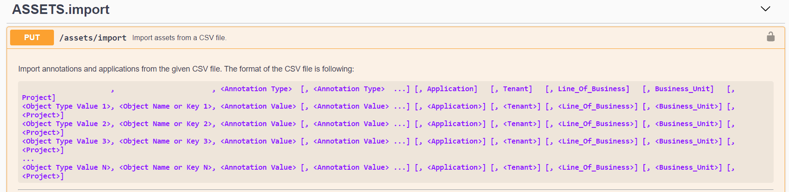
更简单的小工具选择器
通过一个新的小工具选择器，可以在一个一次性视图中显示所有小工具类型，从而可以更轻松地向信息板和资产登录页面添加小工具，因此用户无需再滚动浏览小工具类型列表来查找要添加的小工具类型。相关小工具采用颜色协调，并在新选择器中按邻近度分组。

2020年2月
高级版 API
Cloud Insights 高级版附带了 "强大的 API" 可用于将 Cloud Insights 与其他应用程序集成，例如 CMDB 或其他票证系统。
有关基于 Swagger 的详细信息，请参见 * 管理 > API 访问权限 * 中的 * API 文档 * 链接。Swagger 可提供 API 的简短问题描述和使用情况信息，并允许您在环境中试用每个 API 。
Cloud Insights API 使用访问令牌提供对 API 类别（例如资产或收集）的基于权限的访问。

添加数据收集器后的初始轮询
以前，在配置新的数据收集器后， Cloud Insights 会立即轮询数据收集器以收集 _inventorY_data ，但会等待配置的性能轮询间隔（通常为 15 分钟）以收集初始 _performation_data 。然后，它会等待另一个时间间隔，然后再启动第二次性能轮询，这意味着从新的数据收集器获取有意义的数据需要长达 _30 分钟的时间。
数据收集器 "轮询" 已进行了大幅改进，使初始性能轮询在清单轮询之后立即进行，第二个性能轮询在第一次性能轮询完成后几秒内进行。这样， Cloud Insights 就可以在很短的时间内在信息板和图形上显示有用的数据。
编辑现有数据收集器的配置后，也会发生此轮询行为。
更轻松地复制小工具
在信息板或登录页面上创建小工具副本比以往更简单。在信息板编辑模式下，单击小工具上的菜单并选择 * 重复 * 。此时将启动小工具编辑器，并预先填充原始小工具的配置，并在小工具名称中添加一个 " 副本 " 后缀。您可以轻松进行任何必要的更改并保存新小工具。小工具将放置在信息板底部，您可以根据需要进行定位。完成所有更改后，请记得保存信息板。

单点登录（ SSO ）
借助 Cloud Insights 高级版，管理员可以启用 "单个 Sign-On" （ SSO ）企业域中所有用户对 Cloud Insights 的访问，而无需单独邀请他们。启用 SSO 后，具有相同域电子邮件地址的任何用户均可使用其公司凭据登录到 Cloud Insights 。
|
|
SSO 仅在 Cloud Insights 高级版中可用，必须先进行配置，然后才能为 Cloud Insights 启用它。SSO 配置包括 "身份联合" 通过 NetApp Cloud Central 。联合允许单点登录用户使用公司目录中的凭据访问您的 NetApp Cloud Central 帐户。 |
2020年1月
用于 REST API 的 Swagger 文档
Swagger 介绍了 Cloud Insights 中的每个可用 REST API 及其用法和语法。有关 Cloud Insights API 的信息，请参见 "文档。"。

采集单元更改
在与已安装的 AU 名称相同的主机或 VM 上安装采集单元（ Acquisition Unit ， AU ）时， Cloud Insights 会通过在 AU 名称后附加 "_1" ， "_2" 来确保名称唯一。 等。在从同一虚拟机卸载并重新安装 AU 而不先将其从 Cloud Insights 中删除时，也会出现这种情况。是否需要一个完全不同的 AU 名称？没问题；安装后可以重命名 AU 。
小工具中的优化时间聚合
在小工具中，您可以在 Optimized_ 时间聚合间隔或您设置的 Custom 间隔之间进行选择。优化的聚合会根据选定的信息板时间范围自动选择正确的时间间隔（如果覆盖信息板时间，则会自动选择小工具时间范围）。随着信息板或小工具时间范围的更改，此间隔会动态更改。
简化了 " 开始使用 Cloud Insights " 流程
Cloud Insights 的入门流程已得到简化，首次设置更顺畅，更轻松。只需选择一个初始数据收集器并按照说明进行操作即可。Cloud Insights 将指导您完成数据收集器以及所需的任何代理或采集单元的配置。在大多数情况下，它甚至会导入一个或多个初始信息板，以便您可以快速开始深入了解您的环境（但请留出长达 30 分钟的时间让 Cloud Insights 收集有意义的数据）。
其他改进：
-
采集单元安装更简单，运行速度更快。
-
通过按字母顺序选择数据收集器，您可以更轻松地找到所需的数据收集器。
-
改进后的 Data Collector 设置说明更易于遵循。
-
有经验的用户只需单击一个按钮，即可跳过 " 入门 " 过程。
-
新的进度条将显示您在该过程中的位置。

2019年12月
业务实体可以在筛选器中使用
业务实体标注可在查询，小工具，性能策略和登录页面的筛选器中使用。
可对单值小工具和量表小工具以及由 " 全部 " 滚动到的任何小工具进行深入分析
单击单值或量表小工具中的值将打开一个查询页面，其中显示了此小工具中使用的第一个查询的结果。此外，如果单击任何小工具的图例，并且其数据由 "all" 汇总，则还会打开一个查询页面，其中显示了此小工具中使用的第一个查询的结果。
试用期延长
注册免费试用 Cloud Insights 的新用户现在有 30 天的时间对产品进行评估。这比上一个 14 天试用期有所增加。
受管单元计算
Cloud Insights 中的受管单元（ MTU ）计算已更改为以下值：
-
1 个受管单元 = 2 个主机（任何虚拟机或物理机）
-
1 个受管单元 = 4 TB 未格式化的物理或虚拟磁盘容量
此更改会将您可以使用现有 Cloud Insights 订阅监控的环境容量有效地提高一倍。
2019年11月
版本功能比较表
"* 管理 ">" 订阅 * " 页面 "比较表" 已进行更新，以列出 Cloud Insights 基本版，标准版和高级版中提供的功能集。NetApp 不断改进其云服务，因此请经常查看此页面，找到适合您不断变化的业务需求的版本。
2019年10月
报告
"* Cloud Insights 报告 *" 是一种业务智能工具，可用于查看预定义报告或创建自定义报告。通过报告，您可以执行以下任务：
-
运行预定义报告
-
创建自定义报告
-
自定义报告格式和交付方法
-
计划自动运行报告
-
通过电子邮件发送报告
-
使用颜色表示数据的阈值
Cloud Insights 报告可以为成本分摊，消费分析和预测等领域生成自定义报告，并有助于解决问题解答问题，例如：
-
我拥有哪些清单？
-
我的清单在哪里？
-
谁在使用我们的资产？
-
业务单位所分配存储的成本分摊是多少？
-
需要获取更多存储容量之前需要多长时间？
-
业务单位是否遵循正确的存储层？
-
存储分配在一个月，一个季度或一年中有何变化？
Cloud Insights * 高级版 * 提供报告功能。
Active IQ 增强功能
"Active IQ 风险" 现在可用作对象，可在信息板表小工具中查询和使用。其中包括以下风险对象属性： * 类别 * 缓解类别 * 潜在影响 * 风险详细信息 * 严重性 * 源 * 存储 * 存储节点 * UI 类别
2019 年 9 月
新的 Gauge 小工具
我们提供了两个新的小工具，用于根据您指定的阈值在信息板上以醒目的颜色显示单值数据。您可以使用 * 实心量表 * 或 * 项目符号量表 * 显示值。位于警告范围内的值将显示为橙色。严重范围内的值以红色显示。低于警告阈值的值将显示为绿色。


单值小工具的条件颜色格式
现在，您可以根据设置的阈值以彩色背景显示单值小工具。

在入职期间邀请用户
在入职过程中的任何时候，您都可以单击 " 管理员 ">" 用户管理 ">" + 用户 " 邀请其他用户加入您的 Cloud Insights 环境。请注意，一旦完成入职并收集数据，具有 Guest 或 User 角色的用户将获得更大的优势。
改进了 Data Collector 详细信息页面
数据收集器详细信息页面已进行改进，可以更易读的格式显示错误。现在，错误会显示在页面上的单独表中，如果数据收集器出现多个错误，则每个错误都会显示在单独的行中。
2019 年 8 月
全部与可用的数据收集器
在将数据收集器添加到环境中时，您可以设置一个筛选器，以便根据订阅级别仅显示可供您使用的数据收集器，或者仅显示所有数据收集器。
Active IQ 集成
Cloud Insights 从 NetApp ActiveIQ 收集数据，该 Active IQ 可为 NetApp 客户及其硬件 / 软件系统提供一系列可视化，分析和其他支持相关服务。Cloud Insights 可与 ONTAP 数据管理系统集成。请参见 "Active IQ" 有关详细信息 …
2019 年 7 月
信息板改进
信息板和小工具已通过以下更改进行了改进：
-
除了总和，最小值，最大值和平均值之外， * 计数 * 现在还可用于在单值小工具中汇总。按 " 计数 " 进行滚动时， Cloud Insights 会检查对象是否处于活动状态，并且仅将活动对象添加到计数中。生成的数量取决于聚合和筛选器。
-
在单值小工具中，您现在可以选择显示得到的小数位数，小数为 0 ， 1 ， 2 ， 3 或 4 。
-
绘制一个计数器时，折线图会显示一个轴标签和单位。
-
现在，所有时间序列小工具中的所有指标都提供了服务集成数据 * 转换 * 选项。对于时间序列小工具（ Line ， Spline ， Area ， Stacked Area ）中的任何服务集成（ Telegraf ）计数器或指标，您可以选择所需的方式 "转换这些值"。无（显示的值为 " 当前 " ），总和，增量，累计等
降级到 Basic Edition
如果未配置在过去 7 天内成功完成轮询的可用 NetApp 设备，则降级到 Basic Edition 将失败并显示错误消息。
正在收集 Kube-State-Metrics
。 "Kubernetes Data Collector" 现在，可从 Kube-state-metrics 插件收集对象和计数器，从而大大扩展了可在 Cloud Insights 中监控的指标的数量和范围。
2019 年 6 月
Cloud Insights 版本
Cloud Insights 提供不同版本，可满足您的预算和业务需求。拥有有效 NetApp 支持帐户的现有 NetApp 客户可以使用免费 * 基本版 * 享受 7 天的数据保留和对 NetApp 数据收集器的访问，或者通过 * 标准版 * 更多地保留数据，访问所有受支持的数据收集器，获得专家技术支持等。有关可用功能的详细信息，请参见 NetApp 的 "Cloud Insights" 站点
新的基础架构数据收集器： NetApp HCI
-
"NetApp HCI 虚拟中心" 已添加为基础架构数据收集器。HCI 虚拟中心数据收集器收集 NetApp HCI 主机信息，并要求对虚拟中心内的所有对象具有只读权限。
请注意， HCI 数据收集器仅从 HCI 虚拟中心采集数据。要从存储系统收集数据，还必须配置 NetApp "SolidFire" 数据收集器。
2019 年 5 月
新的服务数据收集器： Kapacitor
-
"Kapacitor" 已添加为服务的数据收集器。
通过 Telegraf 与服务集成
除了从交换机和存储等基础架构设备采集数据之外， Cloud Insights 现在还可以使用从各种操作系统和服务收集数据 "Telegraf 作为其代理" 用于收集集成数据。Telegraf 是一种插件驱动的代理，可用于收集和报告指标。输入插件用于通过直接访问系统 /OS ，调用第三方 API 或侦听已配置的流将所需信息收集到代理中。
有关当前支持的集成的文档，请参见左侧菜单中的 * 参考和支持 * 。
Storage Virtual Machine 资产
-
Storage Virtual Machine （ SVM ）可作为 Cloud Insights 中的资产使用。SVM 具有自己的资产登录页面，可以在搜索，查询和筛选器中显示和使用。SVM 也可以在信息板小工具中使用，并与标注关联。
降低了采集单元系统要求
-
采集单元（ Acquisition Unit ， AU ）软件的系统 CPU 和内存要求已降低。新要求包括：
* 组件 * |
* 旧要求 * |
* 新要求 * |
CPU 核心 |
4. |
2. |
内存 |
16 GB |
8 GB |
支持的其他平台
-
目前已在这些平台中添加以下平台 "支持 Cloud Insights"：
Linux |
Windows |
CentOS 7.3 64 位 CentOS 7.4 64 位 CentOS 7.6 64 位 Debian 9 64 位 Red Hat Enterprise Linux 7.3 64 位 Red Hat Enterprise Linux 7.4 64 位 Red Hat Enterprise Linux 7.6 64 位 Ubuntu Server 18.04 LTS |
Microsoft Windows 10 64 位 Microsoft Windows Server 2008 R2 Microsoft Windows Server 2019 |
2019年4月
2019 年 3 月
2019年2月
从 AWS 子帐户收集
-
Cloud Insights 支持 "从 AWS 子帐户收集" 在一个数据收集器中。您必须将 AWS 环境配置为允许 Cloud Insights 从子帐户收集数据。
数据收集器命名
-
现在，除了字母，数字和下划线之外， Data Collector 名称还可以包括句点（ . ），连字符（ - ）和空格（）。名称不能以空格，句点或连字符开头或结尾。
2019年1月
" 所有者 " 字段更易读
-
在信息板和查询列表中， " 所有者 " 字段的数据以前是授权 ID 字符串，而不是用户友好的所有者名称。现在， " 所有者 " 字段将显示一个更简单，更易读的所有者名称。
订阅页面上的受管单元细分
-
对于 * 管理 > 订阅 * 页面上列出的每个数据收集器，您现在可以查看主机和存储的受管单元（ Managed Unit ， MU ）计数以及总数的细分。
2018年12月
改进了 UI 加载时间
-
Cloud Insights 用户界面（ UI ）的初始加载时间已显著缩短。在加载元数据的情况下， UI 的刷新时间也会因这种改进而受益。
批量编辑数据收集器
-
您可以同时编辑多个数据收集器的信息。在*Observability > Collectors*页面上，选中每个数据收集器左侧的框并单击*散装 操作*按钮，以选择要修改的数据收集器。选择 * 编辑 * 并修改必要的字段。
选定的数据收集器必须是相同的供应商和型号，并且位于同一个采集单元上。
支持和订阅页面可在入职期间使用
-
在入职工作流期间，您可以导航到 * 帮助 > 支持 * 和 * 管理员 > 订阅 * 页面。如果您尚未关闭浏览器选项卡，则从这些页面返回将返回到入职工作流。
2018年11月
通过 NetApp 销售部门或 AWS Marketplace 订阅
-
现在，您可以直接通过 NetApp 订阅和计费 Cloud Insights 。这是对 AWS Marketplace 提供的自助订阅的补充。"* 管理员 ">" 订阅 * " 页面上显示了一个新的 * 联系销售人员 * 链接。如果客户的环境具有或预期具有 1 ， 000 个或更多受管单元（ MTU ），建议通过 " 联系销售人员 " 链接联系 NetApp 销售人员。
文本标注超链接
-
文本类型的标注现在可以包含超链接。
入职演练
-
现在， Cloud Insights 提供了一个入职演练，供第一个用户（管理员或帐户所有者）登录到新环境。演练将指导您完成安装采集单元，配置初始数据收集器以及选择一个或多个有用的信息板的过程。
从图库导入信息板
-
除了在入职期间选择信息板之外，您还可以通过 * 信息板 > 显示所有信息板 * 导入信息板，然后单击 * + 从图库 * 导入信息板。
复制信息板
-
已将复制信息板的功能添加到信息板列表页面中，并可在每个信息板的选项菜单中进行选择，也可从 Save 菜单中选择复制信息板的主页面本身。
Cloud Central 产品菜单
-
用于切换到其他 NetApp Cloud Central 产品的菜单已移至屏幕右上角。